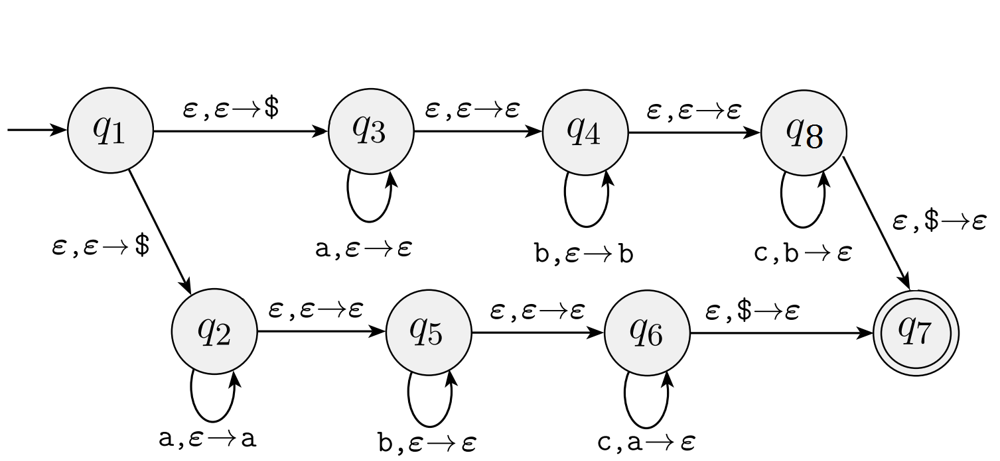

Homework 7
Last updated: Mon, 20 Oct 2025 11:53:15 -0400
Out: Mon Oct 20, 12:00pm EDT (noon) Due: Mon Oct 27, 12:00pm EDT (noon)
Note: Assignments are not officially "released" until—
and are subject to change without notice up to— the indicated "Out" date and time. If an assignment is posted early, students may look ahead but are responsible for ensuring that they are always working with the most recent version of the homework.
This assignment begins to explore context-free languages.
Homework Problems
CFGs and Derivations (12 points)
Inductive Proof: Back to Basics (12 points)
A Context-Free Language? (12 points)
A Pushdown Automata (PDA) (12 points)
README (2 point)
Total: 50 points
Submitting
Submit your solution to this assignment in Gradescope hw7. Please assign each page to the correct problem and make sure your solutions are legible.
A submission must also include a README containing the required information.
1 CFGs and Derivations
Here’s a context-free grammar (CFG), called \mathit{PYISH}, representing the core of a Python-ish language:
\left\langle STMTS\right\rangle | \rightarrow | \left\langle STMT\right\rangle; \left\langle STMTS\right\rangle \mid \left\langle STMT\right\rangle |
\left\langle STMT\right\rangle | \rightarrow | \left\langle ID\right\rangle \texttt{=} \left\langle EXPR\right\rangle |
\mid \texttt{if} \left\langle EXPR\right\rangle\!\!\texttt{:} \left\langle STMT\right\rangle \texttt{ei} \left\langle EXPR\right\rangle\!\!\texttt{:} \left\langle STMT\right\rangle \texttt{else:} \left\langle STMT\right\rangle | ||
\mid \texttt{print(} \left\langle EXPR\right\rangle \texttt{)} \mid \left\langle DEFFN\right\rangle \mid \left\langle EXPR\right\rangle | ||
\left\langle DEFFN\right\rangle | \rightarrow | \texttt{def} \left\langle ID\right\rangle \texttt{(}\left\langle IDS\right\rangle \texttt{)}\texttt{:} \left\langle STMT\right\rangle |
\left\langle EXPR\right\rangle | \rightarrow | \left\langle ID\right\rangle \mid \left\langle NUM\right\rangle \mid \left\langle EXPR\right\rangle \texttt{==} \left\langle EXPR\right\rangle \mid \left\langle EXPR\right\rangle \texttt{*} \left\langle EXPR\right\rangle |
\mid \left\langle EXPR\right\rangle \texttt{+} \left\langle EXPR\right\rangle \mid \left\langle LAM\right\rangle \mid \left\langle ID\right\rangle\texttt{(} \left\langle EXPRS\right\rangle \texttt{)} | ||
\left\langle LAM\right\rangle | \rightarrow | \texttt{lam} \left\langle IDS\right\rangle \!\!\texttt{:} \left\langle EXPR\right\rangle |
\left\langle EXPRS\right\rangle | \rightarrow | \left\langle EXPR\right\rangle, \left\langle EXPRS\right\rangle \mid \left\langle EXPR\right\rangle |
\left\langle NUM\right\rangle | \rightarrow | 0\mid 1\mid 2\mid 3\mid 4\mid 5\mid 6\mid 7\mid 8\mid 9 |
\left\langle IDS\right\rangle | \rightarrow | \left\langle ID\right\rangle \texttt{,} \left\langle IDS\right\rangle \mid \left\langle ID\right\rangle |
\left\langle ID\right\rangle | \rightarrow | \texttt{a}\mid\texttt{b}\mid\texttt{c}\mid\texttt{d}\mid\texttt{e}\mid\texttt{f}\mid\texttt{g} |
(Yes, real-world languages are much more complicated than textbook examples.)
The variables (nonterminals) of the CFG are all the names enclosed in angle brackets, e.g., \left\langle EXPR\right\rangle is a variable name. All other symbols used in the rules are terminals (ignoring whitespace) (also, you may treat multi-symbol terminals as one terminal, e.g., \texttt{lam}).
Give two strings in \mathit{PYISH}’s language by showing their derivation steps. Each given string must have at least six derivation steps and each derivation should use (mostly) different rules.
Give a formal description of the grammar \mathit{PYISH}. You may assume that the given rules are in a set called \mathit{PRULES}.
- Give parse trees for the following strings in the language of \mathit{PYISH}:
\texttt{def d(a,b): a * a + b * b}
\texttt{f = lam a,b: a + b; def g(a,b): f(a,b)+1}
\texttt{if a == b: 1 ei c == d: 2 else: 3}
2 A Context-Free Language?
Here is a language that approximates adding basic whitespace checking, like full Python has, to the language in the problem above.
\mathit{PYSP} = \left\{\texttt{if}\!\left\langle eol\right\rangle\texttt{\_}^*100\texttt{else}\!\left\langle eol\right\rangle\texttt{\_}^*200\mid\left\langle eol\right\rangle\textrm{ is newline; }\texttt{\_}\textrm{ is space; spaces on each line match}\right\}
\Sigma = \left\{\texttt{if},\texttt{else},\texttt{\_},\left\langle eol\right\rangle,0,1,2\right\} (in real-world grammars, terminal (i.e., alphabet) "symbols" can be, and often are, whole words)
Prove that \mathit{PYSP} is a context-free language (CFL).
Your proof must be in the form of a Statements and Justifications table, but it must use the CFG representation of CFLs. Use an Examples Table with the appropriate columns where needed to "prove" that a grammar describes a specific language.
3 Inductive Proof: Back to Basics
Imagine we wish to prove the following statement for string derivations using some CFG G=\left\langle V,\Sigma,R,S\right\rangle:
If \alpha\Rightarrow_G^*\beta then \gamma_1\alpha\gamma_2\Rightarrow_G^*\gamma_1\beta\gamma_2
where \alpha,\beta,\gamma_1,\gamma_2\in (V\cup\Sigma)^*.
In other words, if a grammar can derive a string, then it can derive the same string as a substring in a larger string.
Since \Rightarrow_G^* is a recursive defintion, the proof must also be recursive, i.e., you must use proof by induction.
In this problem, we will review the first few steps of such a proof. Specifically, your task is to submit a numbered list of exactly the following items, which represents specific pieces of the proof:
the exact Statement to Prove (hint: it’s given above, so do not change the problem)
what the proof by induction is "on" (i.e., what is the recursive definition that the proof will follow, and how is that definition recursive)
the Base Case in the above cited definition
the Base Case sub-Statement to Prove (plug in the Base Case above into the main Statement to Prove)
the Inductive (recursive) case in the above cited definition
the Inductive Case sub-Statement to Prove (plug in recursive case into the main Statement to Prove)
the Inductive Hypothesis (or Hypotheses) (plus in the "smaller" part of the recursive definition in the main Statement to Prove)
a proof of the Lemma Statement \textrm{if }\alpha\Rightarrow_G\beta\textrm{ then }\gamma_1\alpha\gamma_2\Rightarrow_G\gamma_1\beta\gamma_2 is true. (Note this statement, which uses the single-step arrow is unrelated to the main statement above, so the multi-step arrow should not appear in this proof). This is a very straightforward and short proof (2-3 lines, plus the "assume P ..." parts of an IF-THEN proof), and the Justifications are even shorter, so anything longer than that is likely on the wrong track.
No external sources / tools are allowed for this problem, since it is merely reviewing proof basics that have already been covered. Any needed definitions can be found in class notes / textbooks
The answers must be exact or precise. In other words, a correct answer should have a list of the exact 8 items above, nothing more nothing less. Any solutions that re-word or change or use undefined alternate notation or terminology will not receive credit.
Related to the above, this means that the exact answers are short. Any "noisy" / overly long answers, e.g., what an AI agent would generate, or answers with extraneous content will not receive credit.
Though you are welcome to attempt the full proof on your own, do not submit it. We are not looking for that in this problem.
4 A Pushdown Automata (PDA)
For the following PDA state diagram: 
Give a formal description of this PDA. Make sure to include all the necessary components.
Give two strings that are in the language recognized by this PDA. For each of these strings, give a sequence of configurations that represents an accepting computation for the PDA. Each should take a different path in the machine and they should end in state q_7.
Give two strings that are not in the language recognized by this PDA.
Give a CFG for the language recognized by this PDA (this problem is easier if you break it down into smaller problems) (alternatively, if you use the PDA-to-CFG conversion algorithm from lecture / the textbook that would work but could be a much more complicated approach, so make sure your answer is clear and understandable if you take this approach).